The UI is built into the binary: nothing else to install. Light or dark, on a desktop or a phone.
These are captured by a Playwright script against a real server on an invented home network (ui/tests/demo/run.sh), so they match the code. The server is minutes old, so its charts are short. A few pages the demo cannot produce (the cluster, the lookup trace and the listener review) show example responses instead.
See what's happening
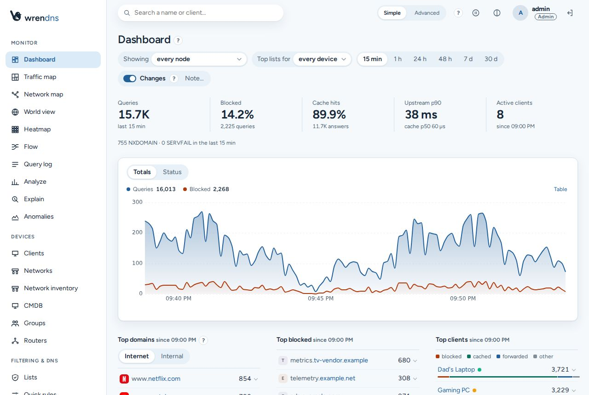
Dashboard: queries, blocked share, cache hits, latency, one chart that gives exact figures on hover, and the top lists (a made-up demo network)
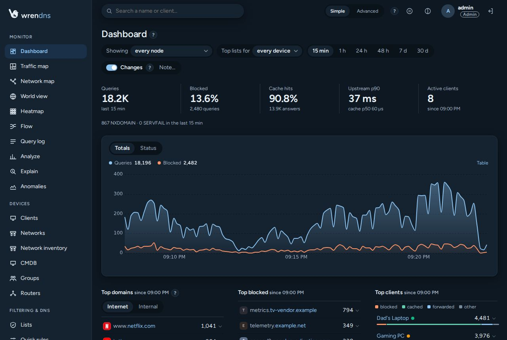
Dashboard (dark theme)
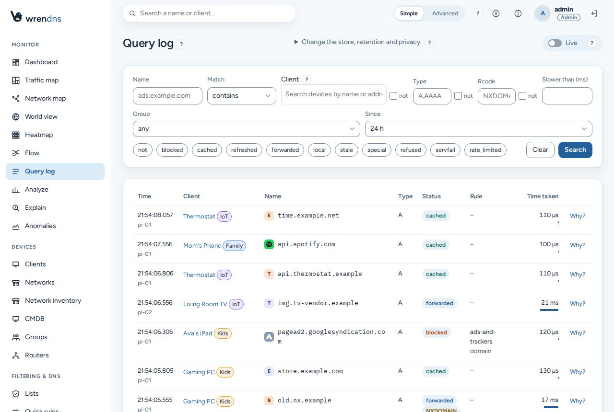
Query log: every question, filterable, with timings
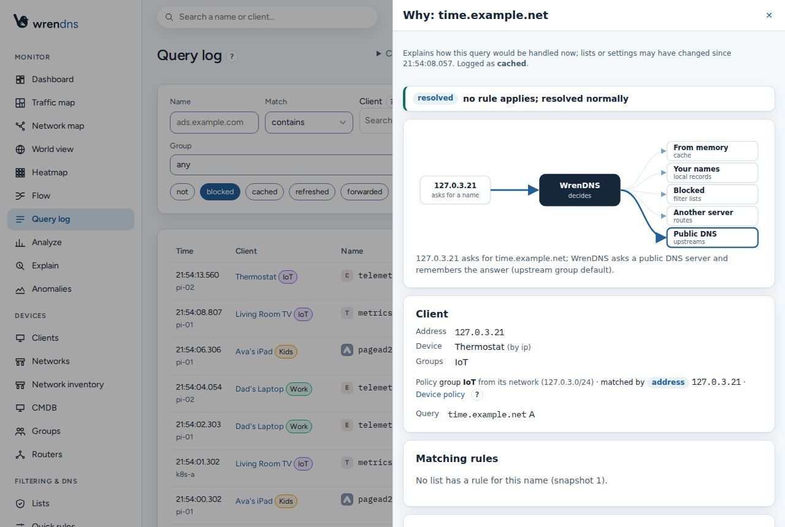
"Why?": the list and rule behind every decision
Decide what's allowed
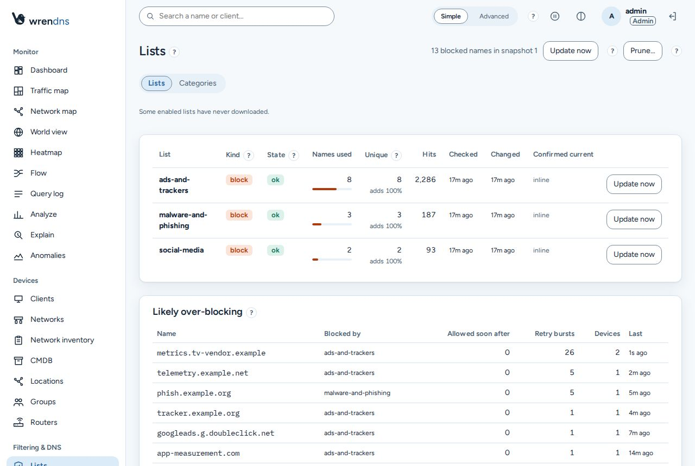
Lists: sizes, refresh state, unique names, and overlap
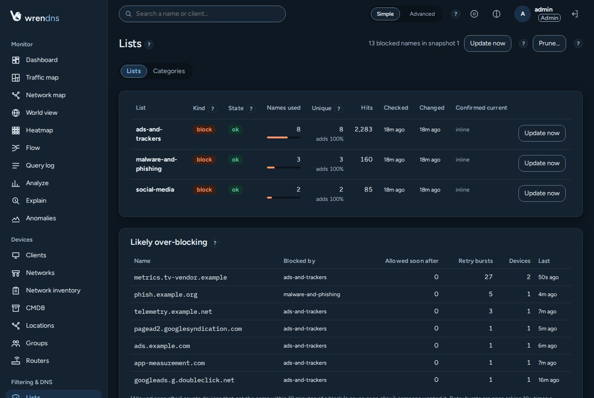
Lists (dark theme)
Run it as one system
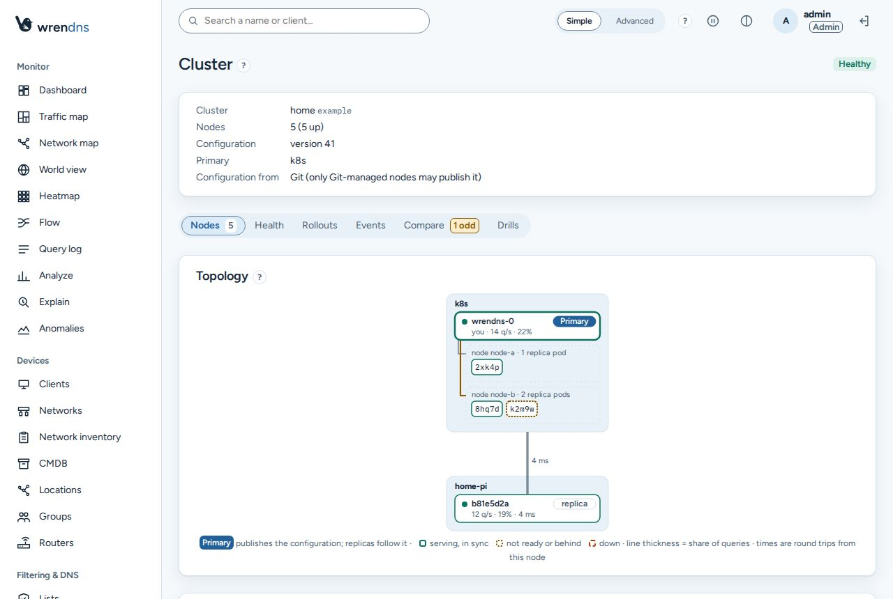
Cluster topology (example data: the demo cluster is three nodes on one machine)
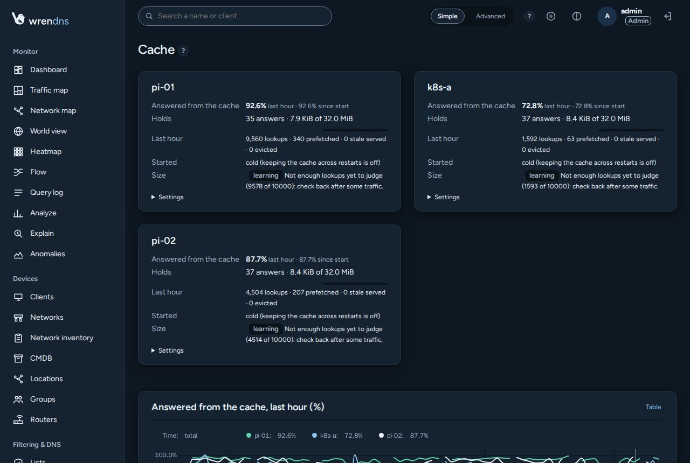
Cache (dark theme)
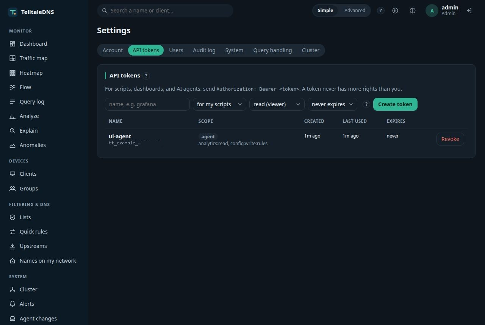
Settings: API and agent tokens (dark theme)
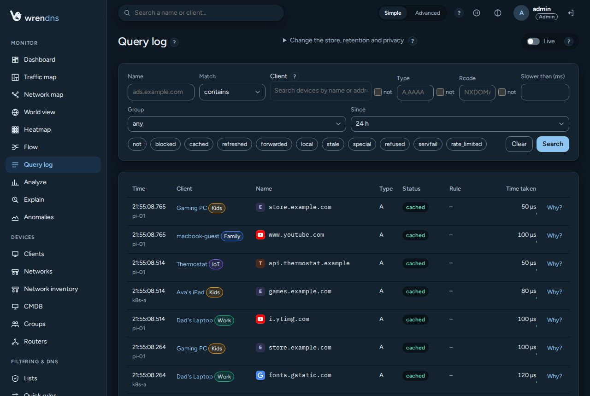
Query log (dark theme)
New on main Coming in 1.1
These pages are in builds of main (the edge channel), not in the 1.0.0 release. What is coming in 1.1. Everything shows made-up devices and example addresses.
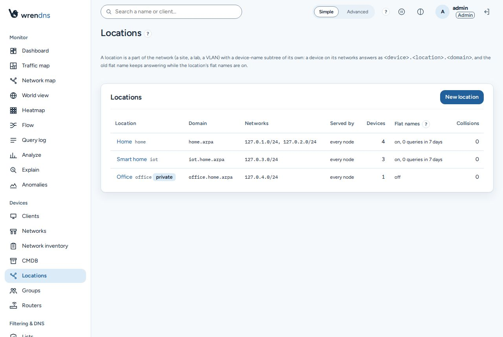
Locations: parts of the network with a device-name subtree of their own
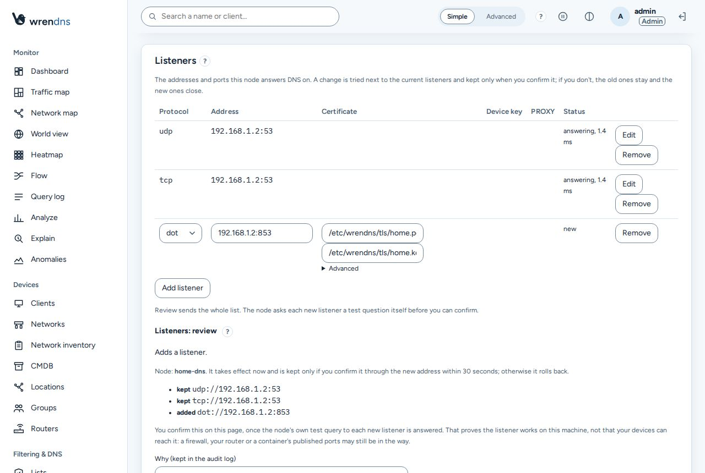
Listeners: change where this node answers, with a review and a test query first (an example node)
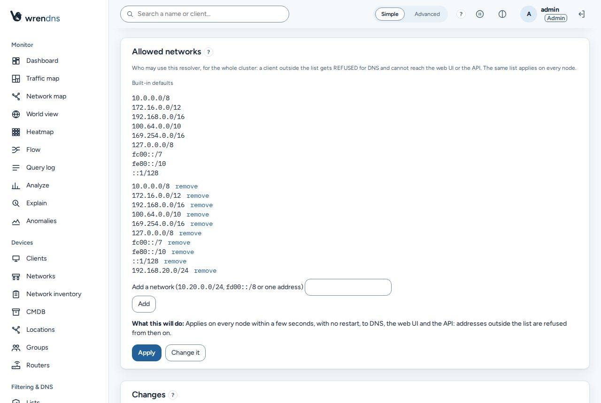
Allowed networks: one list for the whole cluster, checked before it is applied
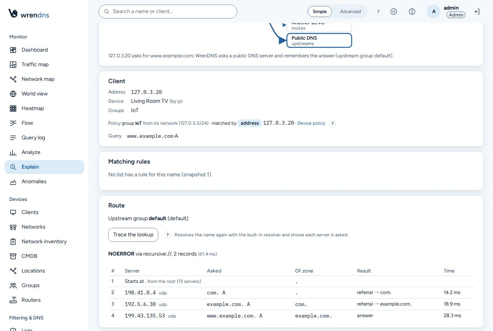
Explain (also under Why?) with the lookup trace of the built-in resolver (an example walk)
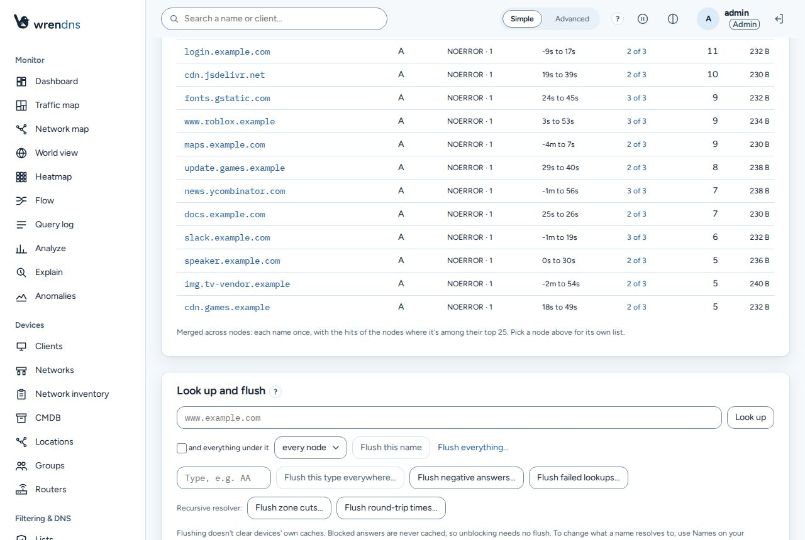
Cache: look up and flush a name (the new flushes by type or kind are in 1.1)